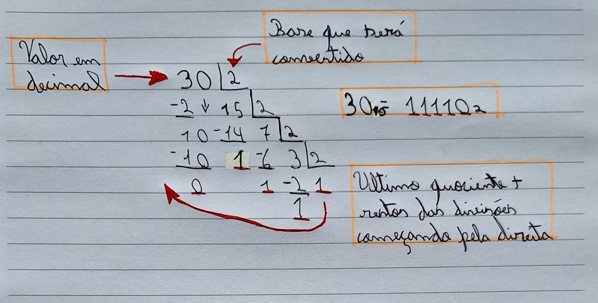
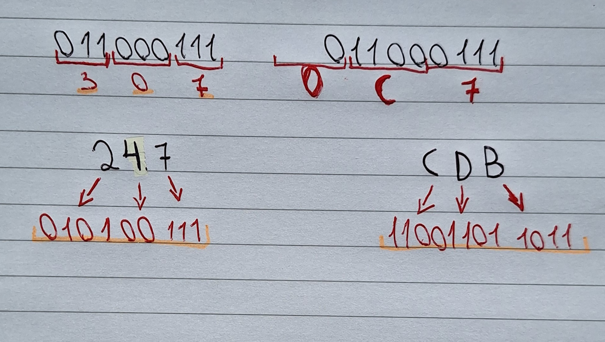
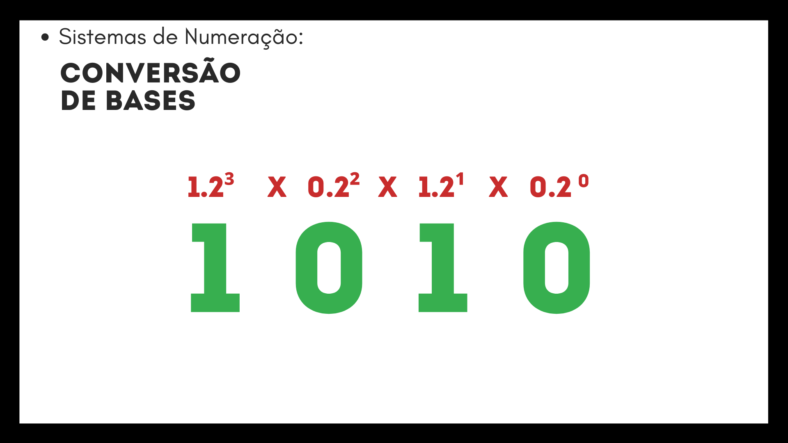
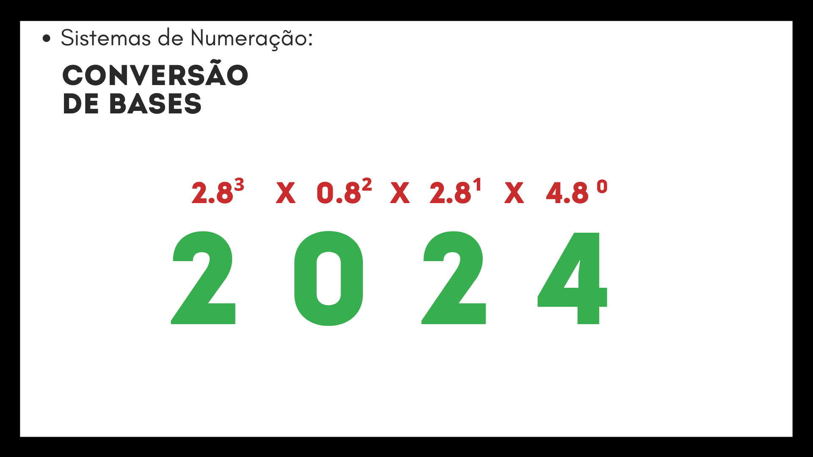

Conversão de Bases
Decimal para Binário, Octal e Hexadecimal
Para fazer essa transformação de bases é necessário fazer divisões!
Você dividirá o número a ser transformado pela base que será convertido e guardar o resto, fazer a divisão novamente pelo quociente da divisão e guardar o resto, até que não seja mais possível dividir o número. O número convertido será cada resto da divisão mais o último quociente começando pela direita.
Muito confuso? Veja a imagem a seguir para compreender melhor:

Para hexadecimal, é preciso converter os números maiores que 9 para seu correspondente em hexadecimal.
Binário para Octal e Hexadecimal e vice versa
É possível converter binários para Octal e Hexadecimal e vice-versa diretamente por meio de uma tabela.
Veja a tabela abaixo.
| Decimal |
Binário |
Octal |
Hexa |
| 0 |
0000 |
0 |
0 |
| 1 |
0001 |
1 |
1 |
| 2 |
0010 |
2 |
2 |
| 3 |
0011 |
3 |
3 |
| 4 |
0100 |
4 |
4 |
| 5 |
0101 |
5 |
5 |
| 6 |
0110 |
6 |
6 |
| 7 |
0111 |
7 |
7 |
| 8 |
1000 |
10 |
8 |
| 9 |
1001 |
11 |
9 |
| 10 |
1010 |
12 |
A |
| 11 |
1011 |
13 |
B |
| 12 |
1100 |
14 |
C |
| 13 |
1101 |
15 |
D |
| 14 |
1110 |
16 |
E |
| 15 |
1111 |
17 |
F |
Para fazer a conversão de binário para Octal faça grupos de 3 números começando pelo último, depois olhe na tabela o correspondente em octal para esse grupo de 3 e converta, para Hexa funciona da mesma forma, mas com grupos de 4 algarismos.
Para converter Octal ou Hexa para binário converta cada algarismo para seu correspondente em binário individualmente começando pela último.
Por exemplo:

Binário, Octal e Hexa para Decimal
Olhe a imagem a seguir, cada posição do algarismo nos números tem uma potência relacionada,
para transformar essas bases é necessário apenas realizar uma multiplicação:


Próximo Tópico